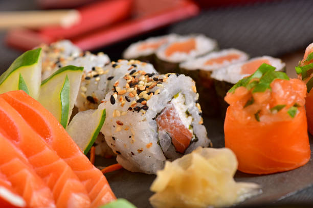

Japanese Sushi Classic

Description
Sushi is a Japanese dish with vinegar rice and various toppings like raw fish or vegetables. It is often served with soy sauce, pickled ginger, and wasabi, offering a unique blend of flavors and textures.
Ingredients:
- 2 cups sushi rice
- 2 1/2 cups water
- 1/2 cup rice vinegar
- 1/4 cup sugar
- 1 teaspoon salt
- Fresh fish (tuna, salmon) or vegetables (cucumber, avocado)
- Nori (seaweed) sheets
- Soy sauce
- Pickled ginger
- Wasabi
Steps:
- Rinse the sushi rice under cold water until the water runs clear. Cook the rice according to the package instructions, using 2 1/2 cups of water.
- In a small saucepan, combine rice vinegar, sugar, and salt. Heat until the sugar and salt dissolve. Allow the mixture to cool.
- Once the rice is cooked, transfer it to a large bowl and gently fold in the vinegar mixture. Let the rice cool to room temperature.
- Lay a sheet of nori on a bamboo sushi mat. Spread an even layer of sushi rice over the nori, leaving a small margin at the top.
- Add slices of fish or vegetables in a line along the bottom edge of the rice.
- Roll the sushi tightly using the bamboo mat, then slice into bite-sized pieces with a sharp knife.
- Serve the sushi with soy sauce, pickled ginger, and wasabi.